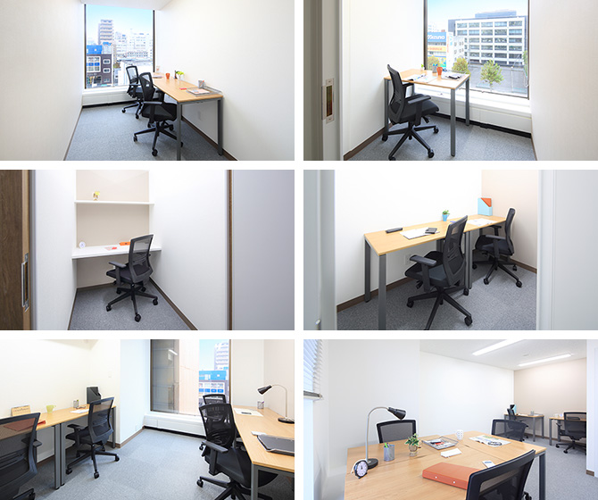

【個室レンタルオフィス】
オープンオフィス大分
オープンオフィス大分がNEW OPEN
東九州の中心都市のひとつ、大分市。オープンオフィス大分は、大分駅の北側、昭和通りに面した大分中央郵便局の隣接した大分恒和ビルの4階に位置します。
センター向かいには大分市役所があり、大分県庁や大分地方裁判所、大分税務署などの官公庁施設も当エリア一帯に集中しています。
オープンオフィス大分が提供するオフィスサービス
-
 高速インターネット＜光ファイバー＞
高速インターネット＜光ファイバー＞
- 100Mbpsの光ファイバーによるブロードバンド環境をご用意しました。各部屋に配線済みですので、パソコンに繋げばすぐLAN経由で高速インターネットを利用出来ます。
-
 ネットワーク・カラーレーザープリンタ+スキャナー
ネットワーク・カラーレーザープリンタ+スキャナー
- ネットワークを利用して、各お部屋のパソコンから印刷できます。プリンタをご用意いただく必要もございません。
スキャナー機能も搭載しております。
-
 カラーレーザーコピー
カラーレーザーコピー
- フロア内にご用意してあります。カード方式でコピーが出来ますので、小銭の準備が不要です。
-
 ICカードキーによる入室管理
ICカードキーによる入室管理
- 専用ICカードを使ったホテル式のスマートシステムを用いて、セキュリティーを向上させています。
-
 ミーティングルーム（会議室）
ミーティングルーム（会議室）
- 商談・会議にご利用いただける共有スペースをご用意しています。インターネットで簡単に予約をしていただけます。
-
 無線LAN（WiFi）
無線LAN（WiFi）
- 共有スペースとミーティングスペースにて、無線LAN(WiFi)サービスをご利用いただけます。

オープンオフィス大分の特徴

東九州の中心都市のひとつ大分
官公庁、大手企業が集中する大分経済の中心
東九州自動車道の開通で物流スピードアップ
市役所向かい。視認性の高い好立地
24時間利用可能
オフィス周辺のMap
オープンオフィス大分近隣のスポット
- ■銀行
- 大分銀行 本店
肥後銀行 大分支店
伊予銀行 大分支店
西日本シティ銀行 大分支店
宮崎銀行 大分支店
愛媛銀行 大分支店
三井住友銀行 大分支店
みずほ銀行 大分支店 - ■レストラン
- 月の木（寿司）
臼杵ふぐ山田や 大分都町店（会席）
カフェフランセYuki（フレンチ）
Restaurant & bar Frankie（イタリアン） - ■ホテル
- JR九州ホテルブラッサム 大分
レンブラントホテル 大分
FORZA ホテルフォルツァ 大分
大分 オアシスタワーホテル
アリストンホテル 大分 - ■レジャー
- PROTEIOS
ホリデイスポーツクラブ 大分店 - ■映画館
- TOHOシネマズ アミュプラザおおいた
オープンオフィス大分の住所・アクセス
- 住所:
- 大分県大分市府内町3-4-20 大分恒和ビル4F
- 空港からのアクセス:
- 大分空港から大分駅までリムジンバスで約65分
- 電車からのアクセス:
- JR「大分駅」から徒歩9分
JR「大分駅」から車で約5分 - お車でのアクセス:
- 昭和通り面す、大分中央郵便局隣り。大分市役所向かい
オープンオフィス大分のフロアマップ
4F

※フロア内は禁煙です。
※こちらはイメージ図となりますので、状況が異なる場合は現況を優先させていただきます。
- ◆初回納入金
- 利用料1ヶ月分の保証金
- ◆共益費
- 水道光熱費、ビル共益費、ゴミ出し、フロア・トイレの清掃、共有部分の消耗品代を含みます。
リージャスグループの説明
リージャス・グループは、柔軟なワークスペースを提供する世界最大の企業です。そのネットワークは世界120カ国1,100都市、3300拠点に及びます。会員数は250万人で、業界で成功を収める大小様々な企業や起業家の方々にご利用いただいています。
リージャスは、個室タイプのレンタルオフィス、コワーキングスペースなど多彩なオフィスプラン、近年需要が高まるモバイルワークやバーチャルオフィス、障害復旧サービスの提供を通じ、お客様が予算やワークスタイルに合わせて仕事を行うことができる環境を提供いたします。